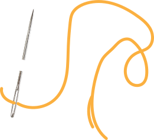
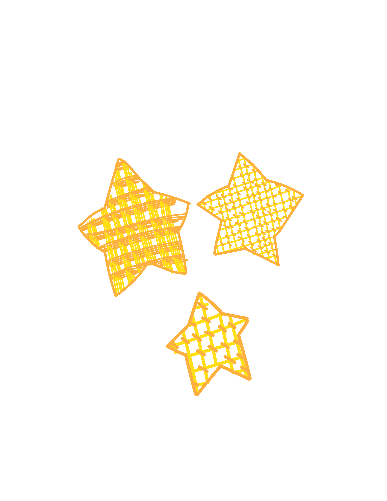
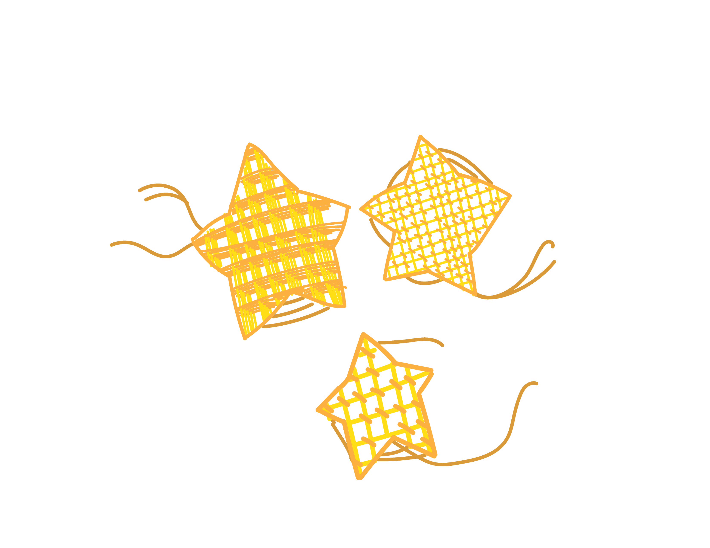
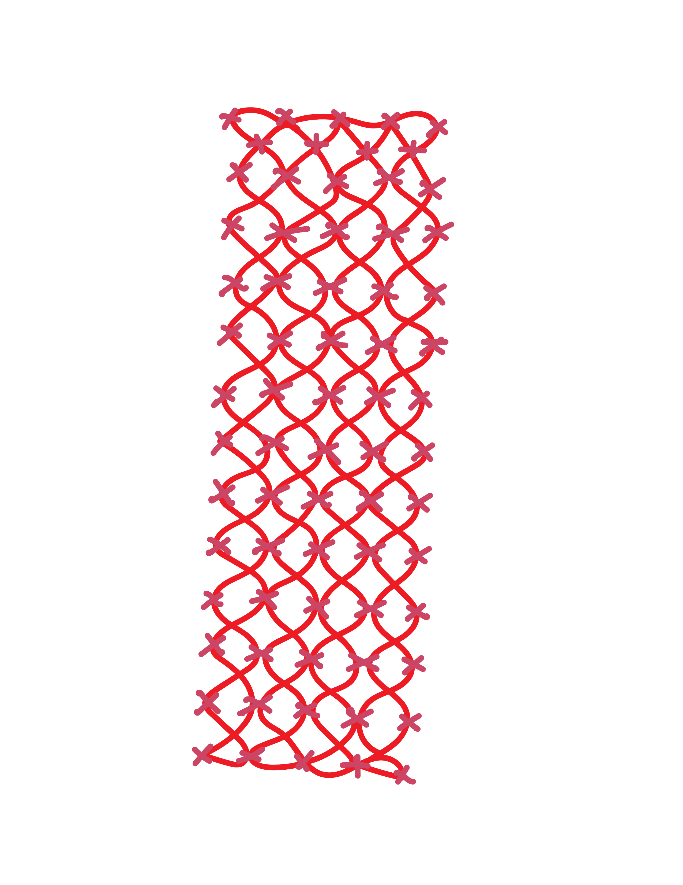
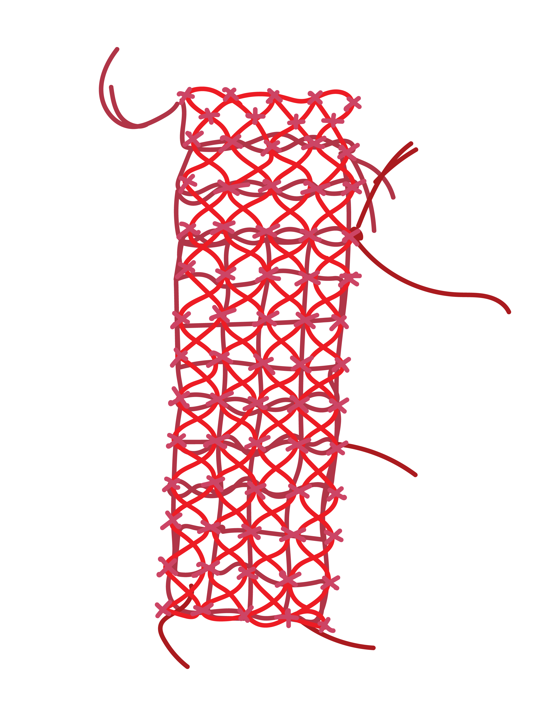
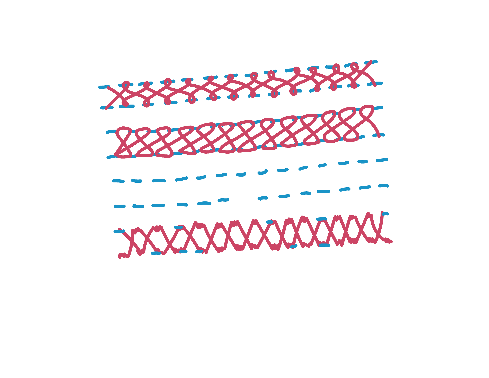
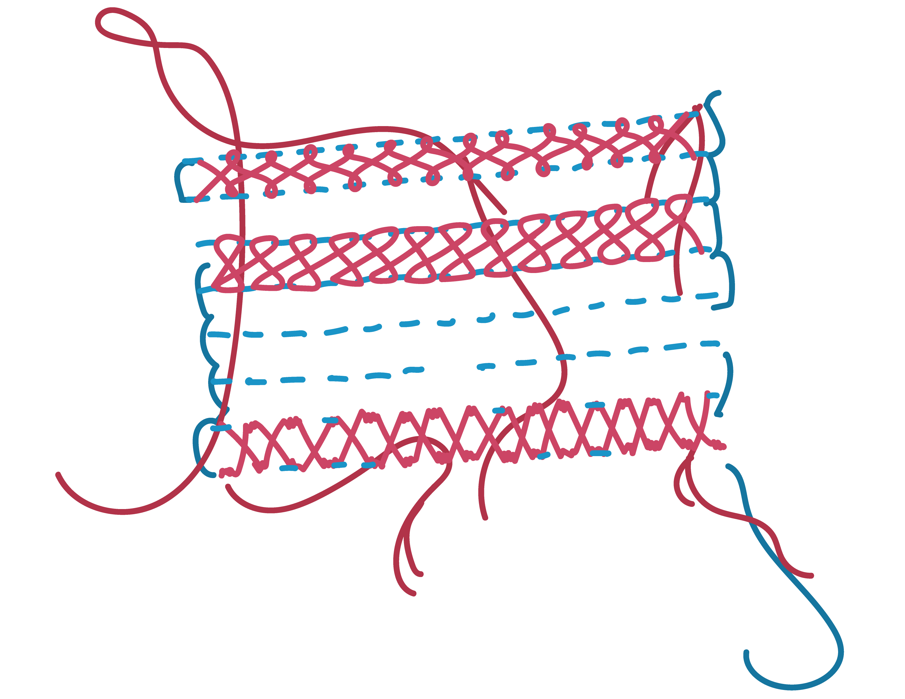
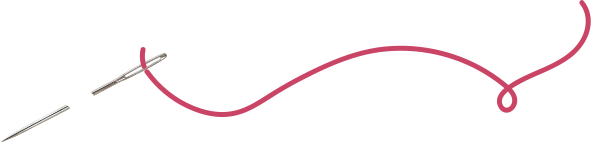

lattice stitch is very neat on the back considering the bulk of the embroidery is completed on the front 9/10


kuguri sashi has lots of thread on the back but it is organized in a grid pattern which makes it okay 8/10



insertion stitch is very neat on the back because its also completely stitched on the surface 9/10